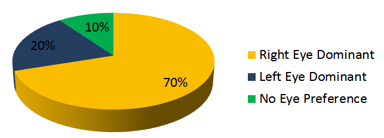

Amin Banitalebi Dehkordi, PhD
(Amin Banitalebi)
(Amin Banitalebi)
Links
• Visual attention modeling for High Dynamic Range (HDR) video using eye-tracking data:
HDR video has become widely available through consumer market displays and cameras. Maturity of these systems relies hugely on improving the
users' quality of experience. We studied the visual saliency aspect of human visual system using eye tracking data collected from a series of
subjective tests and HDR video content.
DML-iTrack-HDR: our freely available eye-tracking database of ground truth eye fixation maps from several HDR sequences.
* database: access DML-iTrack-HDR database at here
* details and reference papers:
1) A. banitalebi-Dehkordi, M. Azimi, M. T. Pourazad, and P. Nasiopoulos, "Visual saliency aided high dynamic range (HDR) video quality metrics,"
International Conference on Communications (ICC) 2016. pdf - published version
2) A. Banitalebi-Dehkordi, M. Azimi, M. T. Pourazad, and P. Nasiopoulos, "Saliency-Adided HDR quality metrics," ISO/IEC JTC1/SC29/WG11, Doc.
m37317, Oct. 2015, Geneva, Switzerland. pdf - published version
LBVS-HDR: LBVS-HDR is a Learning Based Visual Saliency detection model for High Dynamic Range video.
* code: available here
* details and reference paper:
3) A. Banitalebi-Dehkordi, Y. Dong, M. T. Pourazad, and P. Nasiopoulos, "A Learning Based Visual Saliency Fusion Model for High Dynamic Range
Video (LBVS-HDR)," 23rd European Signal Processing Conference (EUSIPCO) 2015. pdf - published version
• Saliency prediction on stereoscopic videos using eye-tracking:
Eye-tracking device is used to collect a largscale dataset of human eye fixations for a set of 3D/2D sequences. Machine learning methods are used
to predict the fixations for stereoscopic videos.
DML-iTrack-3D: our freely available eye-tracking dataset for stereoscopic 3D video. In addition to 3D videos and their ground truth fixation maps,
we also provide 2D versions of the same scenes and their eye-tracking data for free.
* details and reference paper:
1) Amin Banitalebi-Dehkordi, Eleni Nasiopoulos, Mahsa T. Pourazad, and Panos Nasiopoulos, "Benchmark three-dimensional eye-tracking dataset for
visual saliency prediction on stereoscopic three-dimensional video," J. Electron. Imaging. 25 (1), 013008 (January 14, 2016); doi:
10.1117/1.JEI.25.1.013008. pdf - published version
LBVS-3D: our visual attention model for 3D video.
* benchmark: here
* code: here
* details and reference paper: A. Banitalebi-Dehkordi, M.T. Pourazad, and P. Nasiopoulos, "A Learning-Based Visual Saliency prediction model
for stereoscopic 3D video (LBVS-3D)," Multimedia Tools and Applications, 2016, DOI 10.1007/s11042-016-4155-y.
Copyright © 2018 by "Amin Banitalebi" · All Rights reserved · E-Mail: amin[dot]banitalebi[at]gmail.com
• Quality Assessment of Stereoscopic Videos:
The goal in this project is to design and formulate a full-reference quality metric for stereoscopic 3D video. The 3D Quality of Experience (QoE) is
modeled as a combination of cyclopean view quality as well as the depth map quality. To validate the proposed method, we use a large database of
stereoscopic videos containing various types of distortions that occur during the multiview video transmission pipeline (simulcast compression, 3D
video compression, view synthesis, additive Gaussian noise, blurring, and depth map comression). Largescale subjective test (using 88 subjects)
was performed to evaluate the performance of the proposed metric. Comparison with the state-of-the-art demonstrated the superiority of our
method.
Visit here to download part of our video data and refer to following publications for more information:
1) A. Banitalebi-Dehkordi, M. T. Pourazad, and P. Nasiopoulos, "An Efficient Human Visual System Based Quality Metric for 3D Video," Springer
Journal of Multimedia Tools and Applications, pp. 1-29, Feb. 2015, DOI: 10.1007/s11042-015-2466-z. pdf - published version
2) A. Banitalebi-Dehkordi, M. T. Pourazad, and P. Nasiopoulos, "A human-visual-system based 3D video quality metric," ISO/IEC JTC1/SC29/WG11,
Doc. M27745, Geneva, Switzerland, January 2013. pdf - published version
3) A. Banitalebi-Dehkordi, M. T. Pourazad, and P. Nasiopoulos, "A human-visual-system based 3D video quality metric," International Conference on
3D Imaging (IC3D), Dec. 2012, Belgium. pdf - published version
4) A. Banitalebi-Dehkordi, M. T. Pourazad, and P. Nasiopoulos, "3D video quality metric for 3D video compression," 11th IEEE IVMSP Workshop: 3D
Image/Video Technologies and Applications, Seoul, June, 2013. pdf - published version
5) A. Banitalebi-Dehkordi, M. T. Pourazad, and P. Nasiopoulos, "A study on the relationship between depth map quality and the overall 3D video
quality of experience," 3DTV-Conference: The True Vision-Capture, Transmission and Dispaly of 3D Video (3DTV-CON), 2013. pdf - published
6) A. Banitalebi-Dehkordi, M. T. Pourazad, and P. Nasiopoulos, "3D video quality metric for mobile applications," 2013 IEEE International Conference
on Acoustics, Speech and Signal Processing (ICASSP), 2013. pdf - published version
7) 61/731,864 “An efficient human visual system based quality metric for 3D video,” A. Banitalebi-Dehkordi, M. T. Pourazad, and P. Nasiopoulos,
US Provisional Patent Application, filed Nov. 30, 2012.
• Effect of Eye Dominance in the Perception of Stereoscopic 3D Video:
Around 90 percent of humans have a dominant eye (70 % right-eye dominant and 20 % left-eye dominant). We study the effect of eye-dominance for
different scenarios when subjects watch asymmetric stereoscopic sequences when: one view is compressed more than the other view (asymmetric
compression), when one view is down-sampled (and upsampled again: mixed-resolution), one view is synthesized, or one view is blurred. We
provide some recommendations and report the results of our subjective tests.
Please refer to the following paper for more information:
1) A. Banitalebi-Dehkordi, M. T. Pourazad, and P. Nasiopoulos, "Effect of eye dominance on the perception of stereoscopic 3D video," 2014 IEEE
International Conference on Image Processing, ICIP, Oct. 2014, Paris. pdf - published version
• Compression of High Dynamic Range (HDR) Video:
HDR video technologies are finding their ways through the consumer market. While MPEG is standardizing the compression of HDR video, we
performed a subjective/objective study on the performance of the current compression standards of H.264/AVC and HEVC for HDR video
compression. Our results showed that HEVC can be selected as a base for developing compression standard for HDR video.
Visit here or here to find our HDR video database. Please find more details regarding our study in the following paper:
1) A. Banitalebi-Dehkordi, M. Azimi, M. T. Pourazad, and P. Nasiopoulos, "Compression of high dynamic range video using the HEVC and H.
264/AVC standards," 2014 10th International Conference on Heterogeneous Networking for Quality, Reliability, Security and Robustness (QShine),
Rhodes Island, Greece, Aug. 2014 (invited paper). pdf - published version
• Optimal frame rate for capturing, transmission, and display of stereoscopic 3D video:
While the effect of frame rate on the quality and bit rate of 2D video is well explored, there is an interest from academia and industry to know the
best frame rate for capturing, transmission, and display of stereoscopic 3D video. We performed subjective evaluations to find the Mean Opinion
Score (MOS) of human subjects for various frame rates and bit rates. We concluded that increasing the frame rate of stereoscopic 3D video over 60
fps does not provide much improvements in the perceived quality. Moreover, higher frame rates (48 & 60 fps) are distincly prefferd over the lower
frame rate videos. Considering the current available capturing, transmission, and display technologies, we provide guidlines and recommendations
for efficient use of 3D video.
Our sequences are made publiclly available in here or here. More information can be found in the following papers:
1) A. Banitalebi-Dehkordi, M. Azimi, M. T. Pourazad, and P. Nasiopoulos, "Effect of high frame rates on 3D video quality of experience," 2014 IEEE
International Conference on Consumer Electronics, Las Vegas, US, Jan. 2014. pdf - published version
2) A. Banitalebi-Dehkordi, M. Azimi, M. T. Pourazad, and P. Nasiopoulos, "The Effect of Frame Rate on 3D Video Quality and Bitrate," Springer
Journal of 3D Research, vol. 6:1, pp. 5-34, March 2015, DOI 10.1007/s13319-014-0034-3. pdf - published version
• Quality evaluation of HDR video using objective quality metrics:
MPEG is standardizing the compression of HDR video. They are actively performing subjective and objective evaluations on the HDR video encoder.
In this study, we perform objective and sujective evaluations to find the best quality metric for HDR video content.
Refer here or here for our publicly available HDR video database and refer to the following papers for more details:
1) A. Banitalebi-Dehkordi, M. Azimi, Y. Dong, M. T. Pourazad, and P. Nasiopoulos, "Quality assessment of High Dynamic Range (HDR) video content
using existing full-reference metrics," ISO/IEC JTC1/SC29/WG11, Doc. M34661, Strasburg, France, Oct. 2014. pdf - published version
2) M. Azimi, A. Banitalebi-Dehkordi, Y. Dong, M. T. Pourazad, and P. Nasiopoulos, “Evaluating the performance of existing full-reference quality
metrics on High Dynamic Range (HDR) Video content,” ICMSP 2014: XII International Conference on Multimedia Signal Processing, Nov. 2014,
Venice, Italy. pdf - published version
• Speaker Localization: Localizing the speech sources using a compressive sensing approach:
Please find more details in the following paper:
1) M. Banitalebi-Dehkordi, A. Banitalebi-Dehkordi, “Compressive Sampling Based Sound Sources Localization via Sparse FFT
Based Features,” International Arab Journal of Information Technology, IAJIT, April, 2013.
2) M. Banitalebi-Dehkordi, A. Banitalebi-Dehkordi, “Music genre classification using spectral analysis and sparse representation
of the signals,” Journal of Signal Processing Systems, Springer, June 2013, DOI: 10.1007/s11265-013-0797-4. pdf - published
• Digital Watermarking:
1) A. Banitalebi, S. Nader-Esfahani and A. Nasiri Avanaki, “Robust LSB watermarking optimized for local structural similarity,”
19th Iranian Conference on Electrical Engineering, ICEE, Tehran, Iran, May, 2011. pdf - published version
2) A. Banitalebi-Dehkordi, M. Banitalebi Dehkordi, and J. Abouei, "An improvement technique based on structural similarity
thresholding for digital watermarking," Hindawi Journal of Advances in Computer Engineering, Vol. 2014, Article ID 580697. pdf
• Perceptual video coding:
1) A. Banitalebi, and H. R. Tohidypour, “Exploring the distributed video coding in a quality assessment context,” American
Journal of Signal Processing, vol. 1, pp. 17-23, 2011. pdf - published version
2) A. Banitalebi, S. Nader-Esfahani and A. Nasiri Avanaki, “A perceptual based motion compensation technique for video
coding,” 6th Iranian Conference on Machine Vision and Image Processing, MVIP 2010, Isfahan, Iran, Oct. 2010. pdf - published
• Face and visual speech recognition:
1) M. Banitalebi-Dehkordi, A. Banitalebi-Dehkordi, J. Abouei, and K. N. Plataniotis, "Face recognition using a new compressive
sampling-based feature extraction method," Springer Journal of Multimedia Tools and Applications, 2017, doi: 10.1007/s11042-
017-5007-0. camera ready.pdf - published version
2) A. Banitalebi, M. Moosaei, G. A. Hossein-Zadeh, “An investigation on the usage of image quality assessment in visual speech
recognition,” 3rd International Congress on Image and Signal Processing, CISP 2010, China, 2010. published version
• Cognitive radios and telecommunications:
1) S. Imani, A. Banitalebi-Dehkordi, M. Cheraghi, “A random matrix approach to wide band spectrum sensing: unknown noise
variance case,” 21st Iranian Conference on Electrical Engineering, ICEE 2013, Mashhad, Iran. pdf - published version
2) S. Imani, A. Banitalebi, M. Kamarei, “Adaptive sub-optimal energy detection based wideband spectrum sensing for cognitive
radios,” 1st International Conference on Electrical, Control and Computer Engineering, INECCE, Pahang, Malaysia, June, 2011.
3) S. Imani, A. Banitalebi, M. Kamarei, “Using weighted multilevel wavelet decomposition for wideband spectrum sensing in
cognitive radios,” 19th Iranian Conference on Electrical Engineering, ICEE, Tehran, Iran, May, 2011. published version
• Biomedical signal processing:
1) A. Banitalebi, S. K. Setarehdan, G. A. Hossein-Zadeh, “A technique based on chaos for brain computer interfacing,” 14th
International CSI Conference (CSICC2009), Tehran, Iran, Oct. 2009. pdf - published version
2) A. Banitalebi, G. A. Hossein-Zadeh, “On the Variability of Chaos Indices in Sleep EEG Signals,” 15th Iranian International
Conference on Biomedical Engineering, Mashhad, Iran, Feb. 2009. pdf




PUBLICATIONS: click here
DATABASES: click here
INDUSTRY PROJECTS: click here
Visit my Google Scholar page here.


Previous Research Projects
• 3D-HDR Video:
High Dynamic Range (HDR) displays and cameras are finding their ways through the consumer market, just a few years after 3D displays and
cameras became widely available. Soon both academia and industry will explore the commercialization of 3D-HDR content, displays, and cameras.
3D-HDR video will have a large close-to-natural gamut of HDR video, while at the same time provides an impression of depth perception to the
viewers. To assist the efforts to the research community, we provide a freely available 3D-HDR video database called DML-3Dhdr.
DML-3Dhdr: Our database of Stereoscopic HDR (SHDR) videos that are captured from natural scenes, calibrated, and post-processed. The sequences
in this database are uncompressed, and come in HDR format for left-right views.
* database: can be accessed from here
* details and reference paper:
1) A. Banitalebi-Dehkordi, "Introducing a public Stereoscopic 3D High Dynamic Range (SHDR) video database," 3D Res (2017) 8: 3.
doi:10.1007/s13319-017-0115-1. pdf - published version - free on readcube